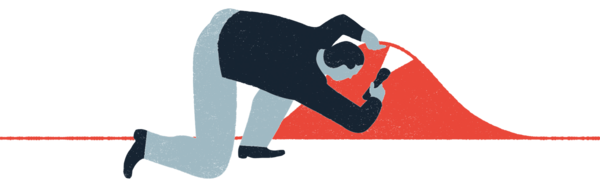
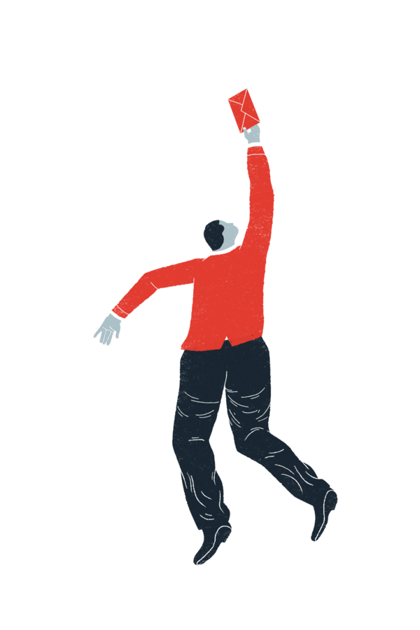
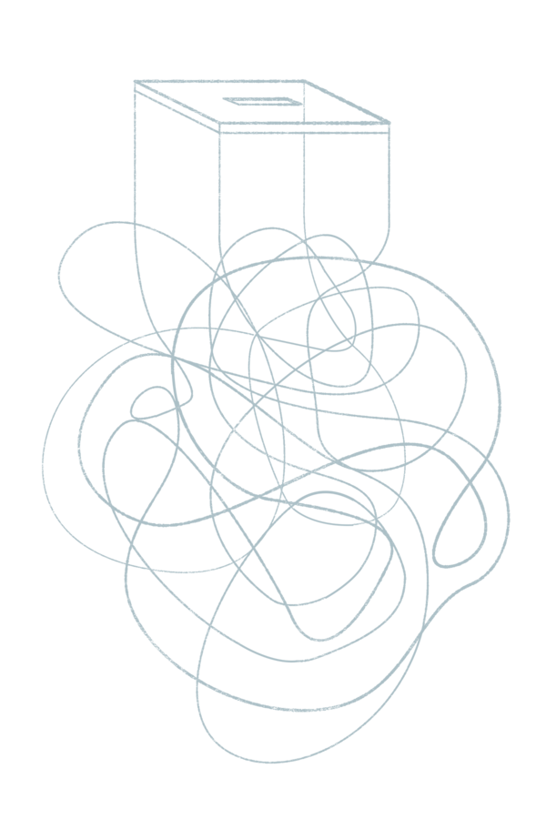
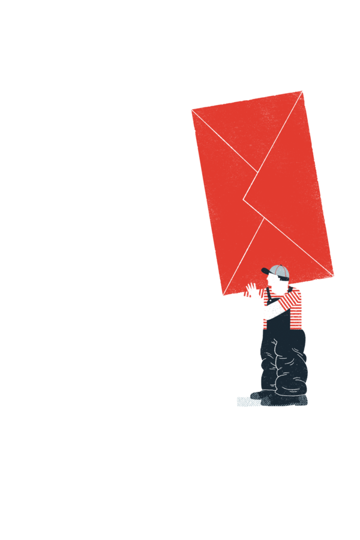
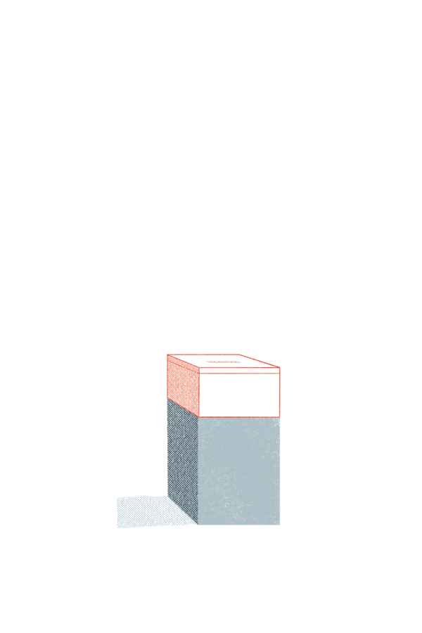
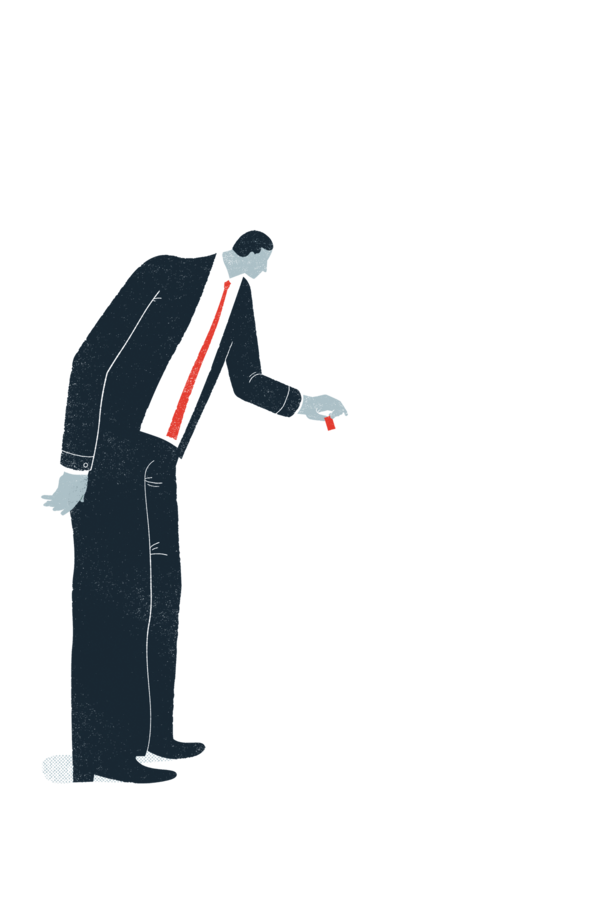
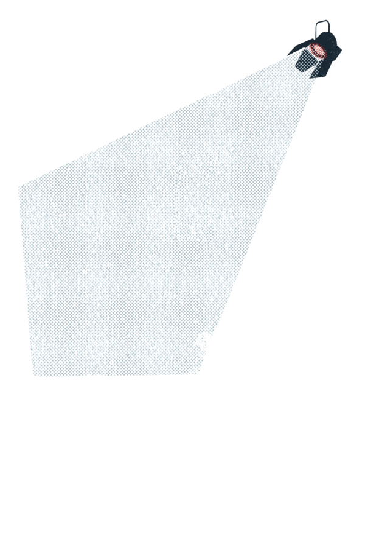
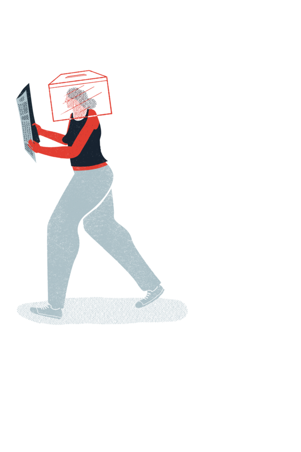

Objective Subject
in the 2016 u.s. election only 55% of people voted.
we want to explore the disconnection people feel in our society through a series of collaborative projects over the next year.
these projects will tackle the relationship people have with their government.

- the voting system
- registration
- disenfranchisement
- ballot design
voters in the u.s. need to get through a complicated, confusing and passive registration system, abide by voting rules that vary county by county and can be prone to political interference, face ballot papers which overwhelm and obfuscate, deal with machines that have a dubious history of reliability and all too often must wait in line for hours simply to exercise the right to vote.





- the electoral system
- gerrymandering
- the electoral college system
- marginal vs non-marginal states
from ‘politicians choosing their voters’ by dictating where electoral boundaries lie, to a representative system dating from an agrarian era which favors rural over urban areas (where 80.7% of the country lives*), our electoral system provides some people with outsized political power and others with very little.
consequently, ‘one person, one vote’ doesn’t mean an equal consequence per vote. our important institutions are facing a growing democratic deficit.
*source: u.s. census bureau
- politics
- campaign finance
- personality & campaign style
- accountability
- the election season
an expensive, protracted election season in ames the passions of a few but turns o many in the electorate. the soundbite-driven, policy-light, ‘horse-race’ media coverage and agenda-setting reduces the debate to personality, style and very little substance.
meanwhile, big money o en dictates the political agenda, which, coupled with the lack of accountability over many years for what candidates say during campaigns, has eroded the public’s trust

- information
- partisan media
- media cycles
- facts
- over-information
- government communication
the u.s. electorate is physically isolated in economically and racially segregated neighborhoods, as well as immersed in their own media bubbles, subject to inaccurate or biased ‘click-bait’ which plays on basic instincts and reinforces existing bias. this makes it difficult to engage in a common reality to tackle real problems.
24-hour news and twitter-length over-simplification of issues fills the vacuum left by governments failing to provide neutral facts and explain their role in people’s lives.

- understanding
- how government works
- what government is doing for you
- how to affect decisions
with comprehensible information lacking, the complex web of government institutions at both federal, state and local levels is misunderstood by citizens. on a daily basis, interacting with government services is hard, as they are designed for system performance and not public/user needs. furthermore, governments do a poor job of explaining their actions, as well as the positive value of the services they continue to provide.
- participatory deficit
- connection with representation
- ongoing engagement with offcials
- grassroots organizing